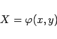
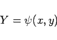
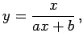
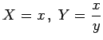
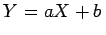

Inhalt Index DeskTop Bronstein

 Funktionen und ihre Darstellung Aufstellung empirischer Kurven Verfahrensweise
Funktionen und ihre Darstellung Aufstellung empirischer Kurven Verfahrensweise


Vorausgesetzt, zwischen x und y besteht eine bestimmte Abhängigkeit, dann werden in der gewählten Näherungsformel zwei Funktionen
|  | (2.243a) |
und
|  | (2.243b) |
derart substituiert, daß eine lineare Beziehung der Form
| Y=AX+B | (2.243c) |
entsteht, wobei A und B Konstanten sind.
Werden für die gegebenen x- und y-Werte die zugehörigen X- und Y-Werte berechnet und graphisch dargestellt, dann kann leicht erkannt werden, ob die zugehörigen Punkte annähernd auf einer Geraden liegen. Danach ist zu entscheiden, ob die gewählte Formel geeignet ist oder nicht.
| Beispiel A |
|
Lautet die Näherungsformel  dann kann  gesetzt werden, und man erhält . |
| Beispiel B |
| Beispiel C |
Zur Entscheidung, ob empirische Daten einer linearen Beziehung Y = AX+B genügen, kann die lineare Regression und Korrelation herangezogen werden. Die Zurückführung eines funktionalen Zusammenhangs auf eine lineare Beziehung wird Rektifizierung genannt.
Im Unterkapitel Gebräuchlichste empirische Formeln werden Beispiele für die Rektifizierung einiger Formeln gegeben einschließlich eines vollständig durchgerechneten Beispiels.